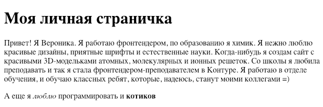
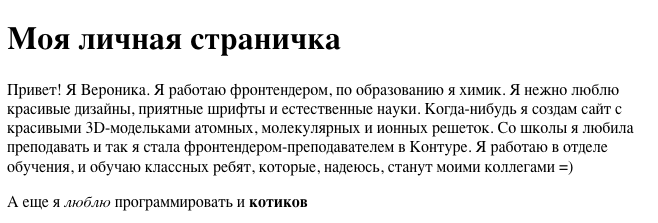
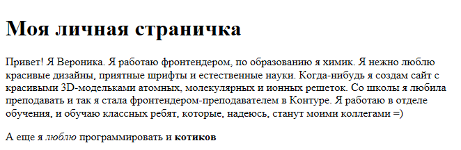
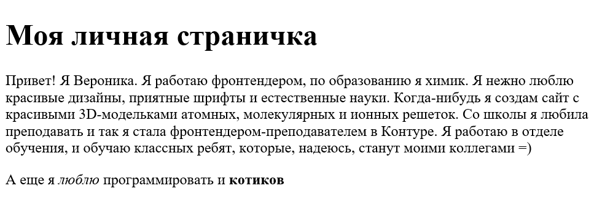
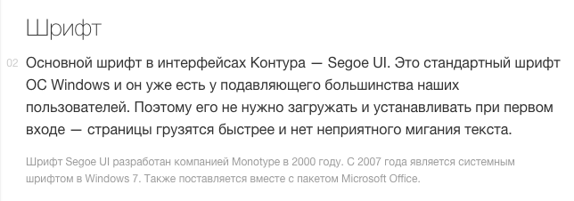
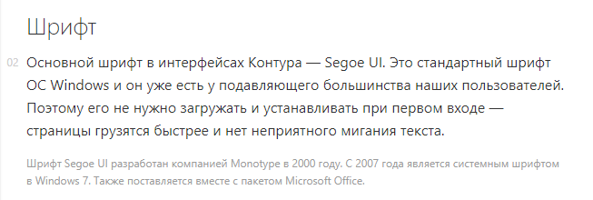
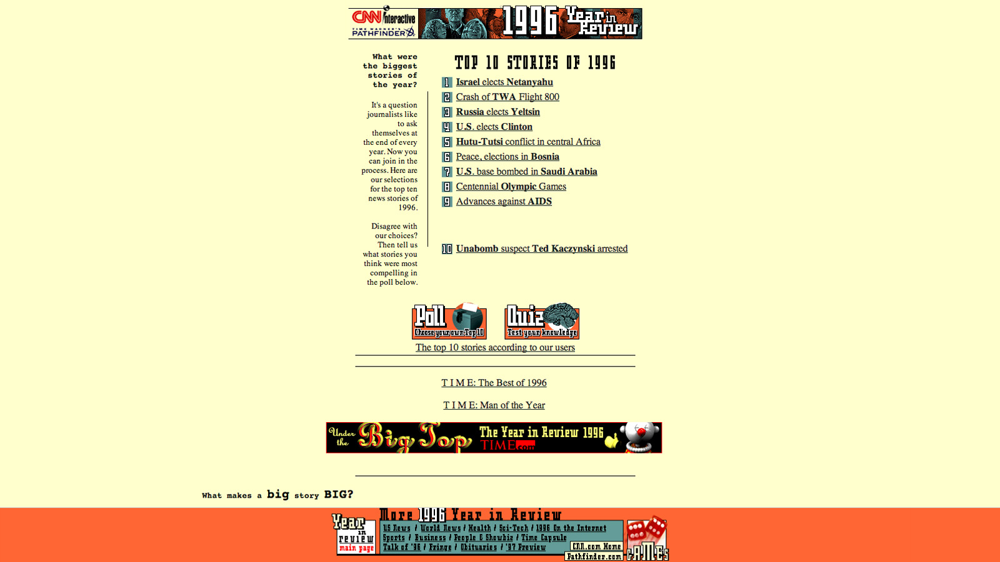
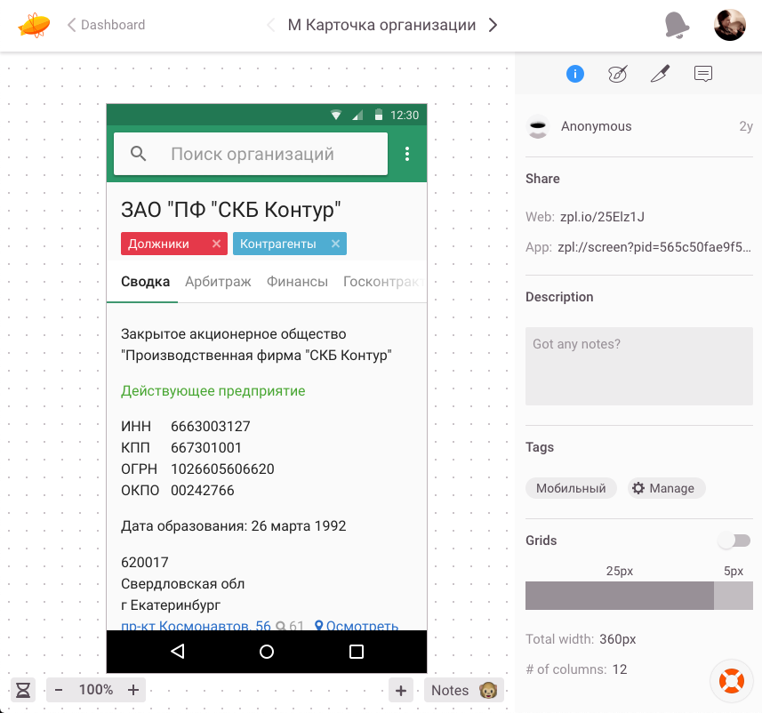
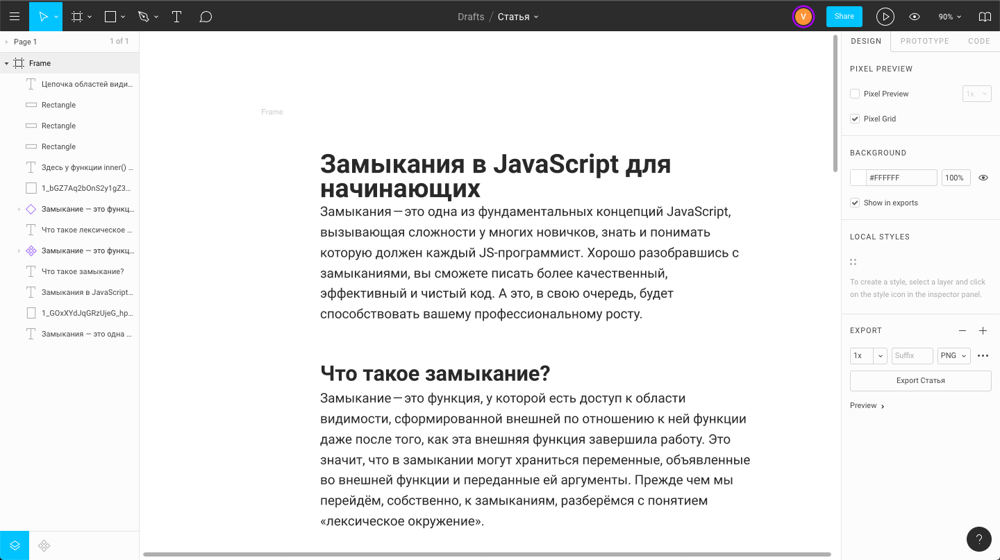
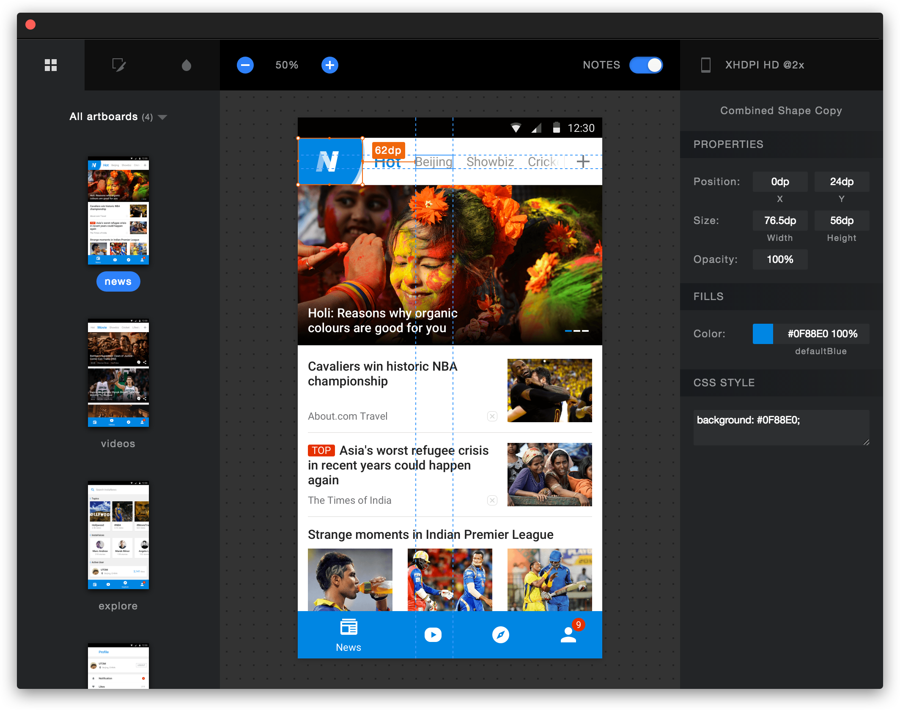

<!doctype html>
<html>
<head>
    <meta charset="utf-8">
    <meta name="viewport" content="width=device-width, initial-scale=1.0, maximum-scale=1.0, user-scalable=no">
    <link rel="stylesheet" href="reveal/css/reveal.css">
    <link rel="stylesheet" href="reveal/css/theme/kontur-light.css" id="theme">
    <!-- Theme used for syntax highlighting of code -->
    <link rel="stylesheet" href="reveal/css/highlight/idea-for-light.css">
    <link rel="stylesheet" href="reveal/css/highlight/darkula-for-dark.css">

    <script defer src="reveal/js/head.min.js"></script>
    <script defer src="reveal/js/reveal.js"></script>
    <script defer src="reveal/initialize.js"></script>
    <script defer src="reveal/js/d3.min.js"></script>

    <title>Верстка</title>
    <style>
        .image-wrap {
            display: flex;
            position: relative;
            width: 100%;
        }
        .image-wrap.image-wrap img {
            border: 1px solid #ccc;
        }
        .img-center {
            position: absolute;
            width: 100%;
            height: auto;
            max-height: max-content !important;
            max-width: max-content !important;
            left: 50%;
            top: 50%;
            transform: translate(-50%, -20%);
        }
    </style>
</head>
<body>

<div class="reveal"><div class="slides">

<section data-markdown><script type="text/template">

# Концепция верстки

</script></section>

<section data-markdown><script type="text/template">

## Веб — не статичная картинка

***

### Разные шрифты

<div class="image-wrap">
    <div>
        <h5>Chrome</h5>
        <h5>Firefox</h5>
    </div>
    <div>
        <h5>Opera</h5>
        <h5>Edge</h5>
    </div>
</div><div class="fragment" data-fragment-index="1" style="width: 50%; margin: 0 auto; position: relative; top: -360px">
    
</div>

***


***

### Разные дефолтные элементы

Больше сравнительных картинок на [MDN](https://developer.mozilla.org/en-US/docs/Learn/HTML/Forms/The_native_form_widgets)


***

### Разные настройки

Пользователь может настроить все:
- Шрифт по-умолчанию (размер, цвет и семейство)
- Зум по-умолчанию
- Запрет на загрузку картинок, шрифтов, скриптов и стилей
- Расширения (баннеры, вырезание рекламы)

***

### Разные экраны


***

## Сайт живой и не должен выглядеть везде одинаково!

***

### Дикие времена

<div style="width: 200px; height: 200px; background-image: linear-gradient(to right, rgb(247, 157, 0), rgb(100, 243,
140)); display: inline-block; margin-right: 30px"></div>

<div style="width: 200px; height: 200px; border: 3px solid greenyellow;
border-radius: 15px; display: inline-block"></div>

***

### Лечение

- Graceful Degradation
- Progressive Enhancement

***

### CSS is Awesome


</script></section>

<section data-markdown><script type="text/template">


## Шрифты

***

### Способы подключения шрифта на сайте

- использовать дефолтные шрифты
- выбрать что-то стандартное
- надеяться, что у пользователя есть нужный нам шрифт
- загрузить шрифт принудительно

***

### Использовать дефолтные шрифты

- serif — с зачечками
- sans-serif - без засечек
- monospace - моноширинные
- fantasy - странные
- cursive - курсивные

```css
div {
font-family: serif;
}
```

***

### Засечки


***

### Плюсы и минусы

\+ не надо думать про шрифт вообще
\+ дефолтные шрифты имеют хорошие показатели читаемости
\+ сайт быстро рендерится (не нужно ждать загрузки шрифта)

\- дефолтные шрифты обычно не очень красивые
\- у всех пользователей сайт будет выглядеть по разному

***

### Выбрать что-то стандартное

Arial, Helvetica, Times New Roman, Comic Sans (не выбирайте его, пожалуйста)

Посмотреть на безопасные шрифты [тут](https://websitesetup.org/web-safe-fonts-html-css/)

```css
body {
font-family: Arial, Helvetica, sans-serif;
}
```

***

### Плюсы и минусы

\+ сайт быстро рендерится (не нужно ждать загрузки шрифта)
\+ шрифт будет одинаковый у большинства пользователей
\+ классические шрифты обычно имеют очень хорошую читаемость, именно поэтому они классические

\- шрифт будет очень "обычный"

***

### Надеяться, что у пользователя есть нужный нам шрифт

Контур так делает с шрифтом Segoe UI

```css
font-family: 'Segoe UI','Helvetica Neue',Arial,Tahoma,sans-serif;
```

***

### Примеры того, как это выглядит

Скриншоты с [Контур.Гайдов](https://guides.kontur.ru/principles/typography/)

<div class="image-wrap"><div><h5>
    MacOS (без Segoe)</h5></div><div><h5>
    Windows (с Segoe)</h5></div>
</div>

***

### Плюсы и минусы

\+ не нужна лиценизия на шрифт
\+ если шрифт популярный, то у большинства он будет
\+ сайт быстро рендерится (не нужно ждать загрузки шрифта)

\- у некоторых пользователей шрифта не будет
\- нужно думать, чем заменить шрифт для тех, у кого его нет

***

### Загрузить шрифт принудительно

Это нужно, если:
- у вас есть брендированный шрифт (например, Яндекс, Билайн)
- какие-то элементы сайта, заголовки или логотип, используют какой-нибудь экзотический шрифт
- у вас очень консервативные заказчики или дизайнер, которые хотят, чтобы сайт везде одинаково выглядел

```html
<link rel="stylesheet" href="https://fonts.googleapis.com/css?family=Roboto:400,300,100&subset=cyrillic,latin">
```
или

```css
@font-face {
font-family: "Lobster";
src: local("Lobster"), url("lobster.woff") format("woff");
}
```

***

### Плюсы и минусы

\+ с большой вероятностью, у всех пользователей шрифт будет выглядеть одинаково
\+ позволяет больше творчества

\- нужна лицензия на шрифт
\- дольше загрузка сайта

</script></section>

<section data-markdown><script type="text/template">

## Разные экраны

***

### Фиксированная верстка

Были времена, когда расположение по центру уже было шедевром адаптивности.



***

### Резиновая верстка

Все размеры задаются в процентах (и других относительных единицах)


***

### Адаптивная верстка


***

### Как сделать адаптивно

_@media_ — медиа-выражения, media queries

```css
@media (max-width: 800px) {
    body {
        background-color: red;
    }
}
```

***

### Что можно описать в медиа-выражениях

- Размер экрана по высоте и ширине, минимальный или максимальный
- Плотность пикселей
- Экран, или проектор, или принтер, или телевизор

Можно описывать несколько правил, например:

```css
@media screen and (max-width: 800px) and (min-width: 300px) {
    body {
        background-color: red;
    }
}
```

Подробнее на [MDN](https://developer.mozilla.org/en-US/docs/Web/CSS/@media)

***

### Есть два подхода к адаптивной верстке

- Mobile First
- Desktop First

Есть еще вариант делать отдельный сайт для мобильных, но это не освобождает от адаптивной верстки

</script></section>

<section data-markdown><script type="text/template">

## Семантика

***

### Что это такое?

В случае верстки, семантика — это использование правильных тегов в правильных по смыслу местах.

Для заголовка _header_, для ссылки _a_, для кнопки _button_, для статьи _article_.

Чтобы верстать семантично, нужно гораздо больше работы мозга, чем сделать все на div'ах.
Избегайте _диватоза_!

***

### Почему это важно?

- Навигация по странице без мышки
- Режим чтения в браузерах
- Экранные читалки
- Парсинг поисковыми роботами
- Забота о коллегах

***

### Пример экранной читалки (Screen Reader)

<iframe width="100%" height="500" src="https://www.youtube.com/embed/xpP_Km5L46E" frameborder="0"
        allow="autoplay; encrypted-media" allowfullscreen></iframe>


***

### Разметка навигационного меню

```html
<nav>
    <ul>
        <li><a>Пункт Меню</a></li>
    </ul>
</nav>
```

***

### Кому хочется больше

- Доклад "[Людоедский интерфейс](https://youtu.be/KAK-WAb9vow)" Вадима Макеева с конференции Web Standard Days
- Доклад "[Introduction to accessibility mechanics](https://youtu.be/vWveRBWNVWI)" Leonie Watson с
конференции Fronttalks
- Эксперимент от Smashing Magazine "[I Used The Web For A Day With Just A Keyboard](https://www.smashingmagazine.com/2018/07/web-with-just-a-keyboard/)"

</script></section>

<section data-markdown><script type="text/template">

## Псевдоклассы и псевдоэлементы

***

### Примеры

<div class="image-wrap">
    <div style="width: 50%">
        <h5>Псевдоклассы</h5>
        - :hover
        - :checked
        - :focus
        - :empty
        - :disabled
        - :first-child
        - :last-child
    </div>
    <div style="width: 50%">
        <h5>Псевдоэлементы</h5>
        - ::before,
        - ::after
        - ::first-letter
        - ::placeholder
        - специфичные вендорные
    </div>
</div>

[Полный список](https://webref.ru/css#pseudo-class)

***

### Как пользоваться

```css
a {
    color: blue;
}

a:hover {
    color: red;
}

a:visited {
    color: orange;
}
```

</script></section>

<section data-markdown><script type="text/template">

## Дизайн-макеты

***

### Самое грустное — картинка

Для картинок точно пригодятся расширения:

- [линейка](https://chrome.google.com/webstore/detail/designers-ruler/mlbnpnlmfngmlcmkhjpbfokdphfehhjj) — проверить выравнивание
- [автоматическая мерилка](https://chrome.google.com/webstore/detail/dimensions/baocaagndhipibgklemoalmkljaimfdj) —
измерять размеры. Самое больное — размеры шрифта
- [PixelPerfect](https://chrome.google.com/webstore/detail/pix-to-pix-pixel-perfect/binboaimbgchaamickjnhgjdccohndin) —
проверить сходство того, что получилось с каритнкой

***

### Менее грустное — .pds

Это стандарт индустии был долгое время, поэтому все привыкли


***

### Тоже грустное — Adobe Illustrator, Sketch

- Нужно поставить их себе. Желательно легально
- Если у вас не мак, то скетч не поставить никак
- Нужно научиться ими пользоваться.

***

### Идеально: выгруженные в html макеты.

- online
    - zeplin.io
    - figma.com
- offline
    - Sketch Measure
    - Marketch

***





***

### Мы для вас будем выгружать макеты в Marketch

***

### Как узнать цвет чего угодно

- найти в инструментах разработчика любой элемент с заданным цветом
- кликнуть по цветному квадратику рядом с цветом
- пипеткой выбрать цвет на странице
- скопировать полученный цвет куда угодно

или
- поставить какое-нибудь расширение-пипетку

</script></section>

</div></div>
</body>
</html>
